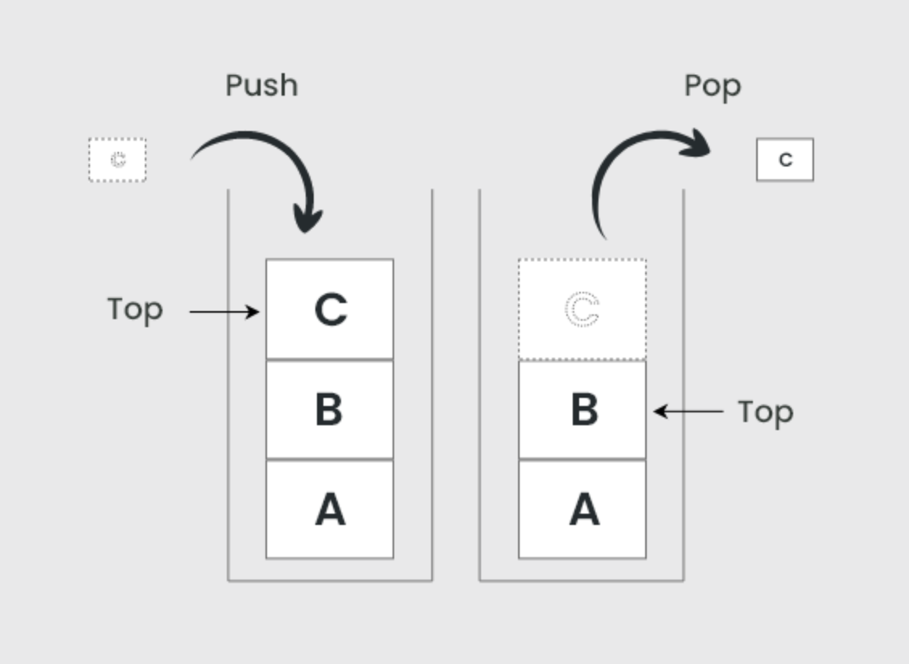

Stacks
A stack is a data structure that follows LIFO: Last In, First Out. The last item you add is the first one you remove.

Main operations
- push: add an item to the top
- pop: remove the top item
- peek/top: look at the top item without removing it
Where stacks appear in real life
- Undo/redo in editors
- Browser history (back button behavior)
- Function calls (call stack)
Complexity (general idea)
Push and pop are typically O(1) because they only affect the top of the stack.
Stack Applications
- Expression evaluation (like solving math equations)
- Checking balanced parentheses in code
- Backtracking algorithms
Implementation
A stack can be implemented using either an array or a linked list. The main idea is that all operations happen at one end — the top.